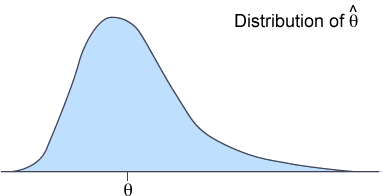

Distribution of an estimator
We now assume that \({X_1, X_2, \dots, X_n}\) is a random sample from a distribution involving a single unknown parameter \(\theta\). Any estimator \( \hat{\theta}(X_1, X_2, \dots, X_n) \) is a function of these \(n\) random variables and is therefore itself a random quantity with a distribution. We often simply write such an estimator as \( \hat{\theta}\).
The properties of an estimator depend on its distribution. This distribution may be either discrete or continuous, depending on the distribution from which the sample is taken and the specific estimator. The estimator described by the following pdf has a continuous distribution but our description of estimators also holds when its distribution is discrete.

For \( \hat{\theta}\) to be a good estimator of the unknown parameter \(\theta\), its distribution should concentrated near \(\theta\). We will next describe two aspects of this.
Bias
Firstly, a good estimator of a parameter \(\theta\) should have a distribution whose "centre" is close to \(\theta\). This can be summarised by the distance of the estimator's mean from \(\theta\).
Definition
The bias of an estimator \(\hat{\theta}\) of a parameter \(\theta\) is defined to be
\[ \Bias(\hat{\theta}) \;=\; E[\hat{\theta}] - \theta \]If its bias is zero, \(\hat{\theta}\) is called an unbiased estimator of \(\theta\).
Many popular estimators are unbiased.
Sample mean
If \({X_1, X_2, \dots, X_n}\) is a random sample from a distribution with mean \(\mu\), the sample mean, \(\overline{X}\), is an unbiased estimator of the distribution mean, \(\mu\).
We showed earlier that a sample mean, \(\overline{X}\), has a distribution whose mean is the same as that of the distribution from which the sample was selected, \(\mu\).
We now give another example whose proof is more complex.
Sample variance
If \({X_1, X_2, \dots, X_n}\) is a random sample from a distribution with variance \(\sigma^2\), the sample variance,
\[ S^2 = \sum_{i=1}^n {\frac {(X_i - \overline{X})^2} {n-1}} \]is an unbiased estimator of \(\sigma^2\).
The proof is based on a result that we proved earlier. For any random variable, \(Y\),
\[ Var(Y) = E[Y^2] - \left(E[Y]\right)^2 \]This can be rearranged as follows:
\[ E[Y^2] = Var(Y) + \left(E[Y]\right)^2 \]Now
\[ \begin{align} \sum_{i=1}^n {(X_i - \overline{X})^2} & = \sum_{i=1}^n {(X_i^2 - 2X_i\overline{X} + \overline{X}^2)} \\ & = \sum_{i=1}^n {X_i^2} - 2\overline{X}\sum_{i=1}^n {X_i} + n\overline{X}^2 \\ & = \sum_{i=1}^n {X_i^2} - n\overline{X}^2 \end{align} \]Therefore
\[ E\left[\sum_{i=1}^n {(X_i - \overline{X})^2}\right] \;=\; n \times E[X^2] - n \times E[\overline{X}^2] \]Applying the earlier result, both with \(Y = X\) and \(Y = \overline{X}\), we get
\[ \begin{align} E\left[\sum_{i=1}^n {(X_i - \overline{X})^2}\right] & \;=\; n \times \left(Var(X) + E[X]^2 \right) - n \times \left(Var(\overline{X}) + E[\overline{X}]^2 \right) \\ & \;=\; n(\sigma^2 + \mu^2) - n \left(\frac {\sigma^2} n + \mu^2 \right) \\ & \;=\; (n-1)\sigma^2 \end{align} \]Therefore
\[ E[S^2] \;=\; E\left[\frac {\sum_{i=1}^n (X_i - \overline{X})^2} {n-1}\right] \;=\; \sigma^2 \]This explains why we use the denominator \((n-1)\) in the formula for the sample standard deviation rather than simply \(n\).
Sample standard deviation
The sample standard deviation, \(S\), is a biased estimator of a distribution's standard deviation, \(\sigma\).
We again use the general result that
\[ Var(Y) \;=\; E[Y^2] - \left(E[Y]\right)^2 \]with \(Y = S\). Rearranging the equation gives
\[ \left(E[S]\right)^2 \;=\; E[S^2] - Var(S) \;=\; \sigma^2 - Var(S) \]Provided \(S\) is not a constant, its variance will be greater than zero, so
\[ \left(E[S]\right)^2 \lt \sigma^2 \]So \(E[S]\) must be less than \(\sigma\).